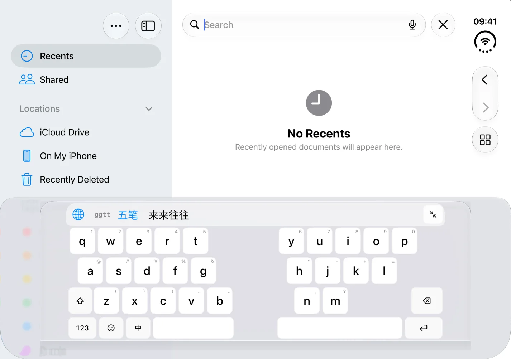
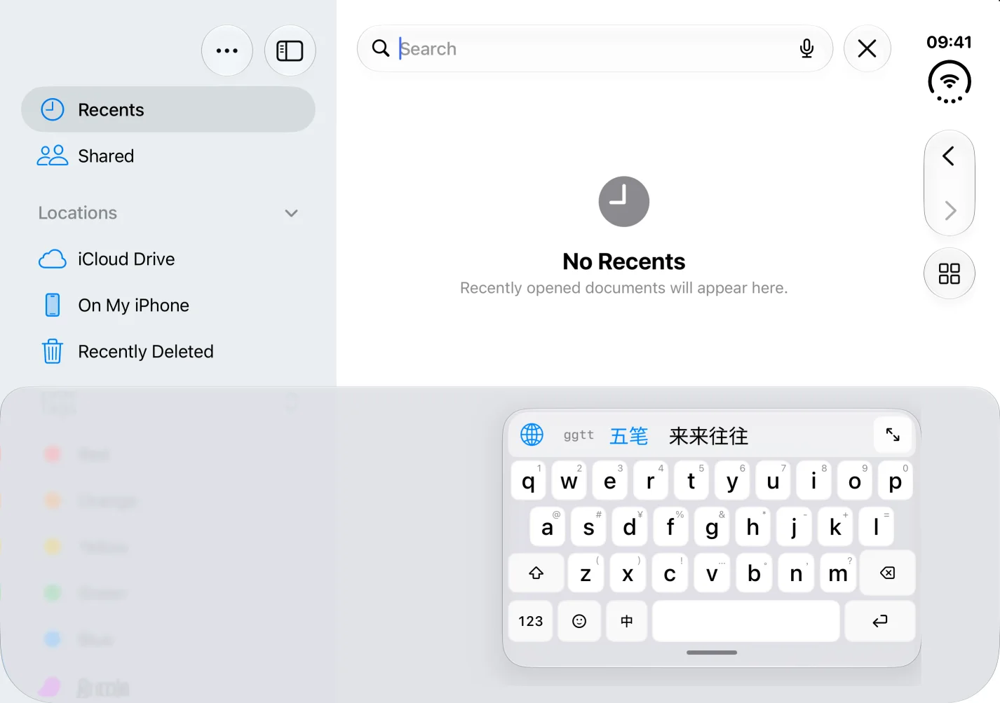

从第一键开始选字
一到四键均可查码。单键时按分号可选键名汉字。默认排第二，和一级简码相同时合为首选。同键四连输入全码时，键名汉字排第一。
查看操作说明—一到四键均可查码。单键时按分号可选键名汉字。默认排第二，和一级简码相同时合为首选。同键四连输入全码时，键名汉字排第一。
查看操作说明调整候选数量、透明度、字号与横竖布局。轻按 Shift 切换中英，也能为常用应用设定默认语言。
查看操作说明用鼠标拖动候选词，把常用词排到前面。
查看操作说明导入搜狗细胞词库、Rime 码表或文本词表。支持在线词库、手动加词，以及通过 iCloud Drive 同步词库和设置。
查看操作说明支持连续上屏自动组词，也可在词库设置开启删码重打自动加词。打不出「微信」时，删掉 tmwy，分开选「微」和「信」，WA 五笔就会在编码吻合时把这个词加入用户词库。
查看操作说明开启语言学习，在候选词旁显示释义。内置英语词表可离线使用，也可连接自己的服务补充译词。
查看操作说明连接兼容服务，补全字词、问字或翻译选中文字。云联想默认关闭，由你选择是否启用。
查看操作说明启用语音后，按住自选快捷键录音。可选择 Apple Speech 或兼容的云转写服务。
查看操作说明外观可以先试，设置可以逐项查。安装与日常操作都有独立说明。
展开内屏时可用双手分区键盘，双指捏合后可拖动小键盘。下载与设备要求以 App Store 页面为准。


WA 五笔使用 86 五笔码表。在线试打也使用 86 五笔编码，可以先在页面上体验键位和候选。
Mac 版从本页下载安装包，支持 macOS 13 及以上的 Apple 芯片与 Intel Mac。iOS 版通过 App Store 下载，设备和系统要求以商店页面为准。
打开「系统设置 → 键盘 → 文本输入 → 编辑」，在简体中文中添加 WA 五笔。首次安装后若列表没有刷新，请保存工作并重新登录，再添加输入源。
不需要。Mac 版可使用 Apple Speech，在系统支持时优先设备端识别。选择云转写服务时，才需要配置对应服务。
可以。同一 Apple 账户的 Mac 可开启 iCloud 同步，词库与多项设置会合并。密钥和系统授权仍由各设备单独管理。
从输入法菜单手动检查更新，或在设置中开启自动下载并安装。下载校验通过后安装，macOS 可能请求管理员授权。
macOS 13 或更新版本，支持 Apple 芯片与 Intel。